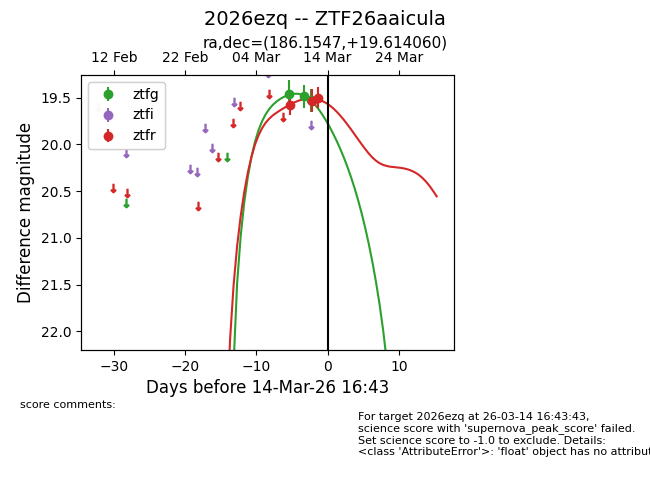
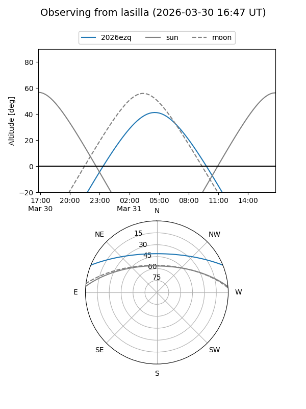
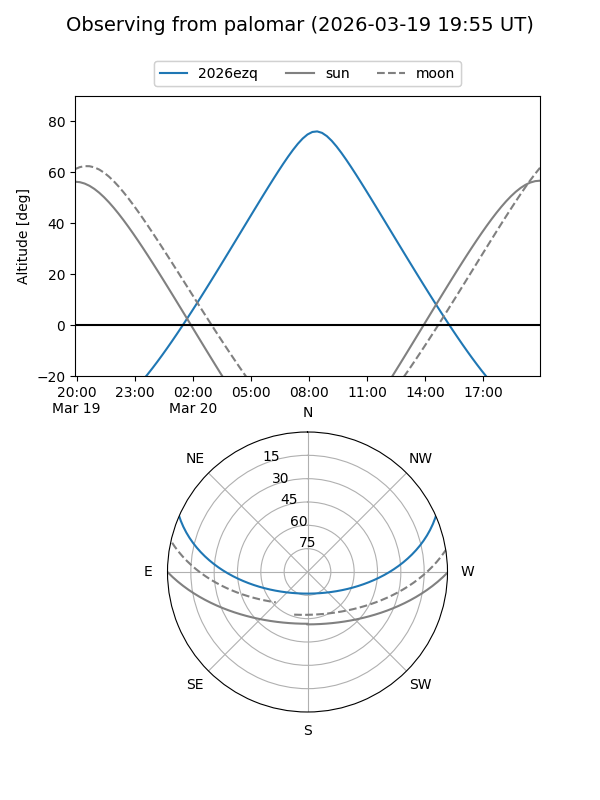
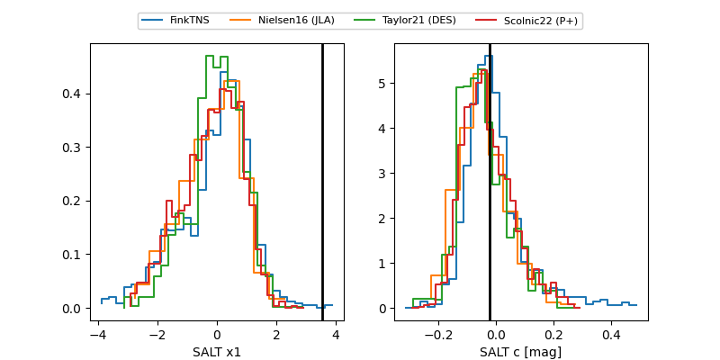

2026ezq
Target 2026ezq at 2026-03-14 16:44
Aliases and brokers:
FINK: link
Lasair: link
ALeRCE: link
TNS: link
YSE: link
alt names
ZTF26aaicula (ztf,fink_ztf)
2026ezq (tns,yse)
Coordinates:
equatorial (ra, dec) = 186.1547,+19.61406
equatorial (HMS+DMS) = 12:24:37.12,+19:36:50.62
galactic (l, b) = (262.2256,+80.29166)
Flags:
Photometry:
last ztfg=19.53, ztfr=19.50
3 ztfg, 3 ztfr detections
Lightcurve

Visibility


Additional plots
